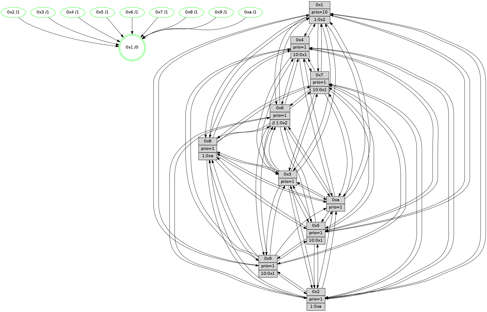

>> << IDX [start] -100 -25 -5 +0 +5 +25 +100 [1330.00554609]
 Previous packets
----------------------------------------------------------------------
1325.276756 beacon01(faad) #0 coord=01,02,03,04,05,06,07,0a,09,08 cycle=688.0ms assoc
-- color-indic=1 64 5f 63
1325.286738 beacon02(faad) #0 coord=01,02,03,04,05,06,07,0a,09,08 cycle=688.0ms assoc 64 cc 52
1325.296739 beacon03(faad) #0 coord=01,02,03,04,05,06,07,0a,09,08 cycle=688.0ms assoc 64 b6 1f
1325.306740 beacon04(faad) #0 coord=01,02,03,04,05,06,07,0a,09,08 cycle=688.0ms assoc 64 c1 f5
1325.316739 beacon05(faad) #0 coord=01,02,03,04,05,06,07,0a,09,08 cycle=688.0ms assoc 64 bb b8
1325.326740 beacon06(faad) #0 coord=01,02,03,04,05,06,07,0a,09,08 cycle=688.0ms assoc 64 35 6f
1325.336741 beacon07(faad) #0 coord=01,02,03,04,05,06,07,0a,09,08 cycle=688.0ms assoc 64 4f 22
1325.346744 beacon0a(faad) #0 coord=01,02,03,04,05,06,07,0a,09,08 cycle=688.0ms assoc 64 3e 29
1325.366746 beacon08(faad) #0 coord=01,02,03,04,05,06,07,0a,09,08 cycle=688.0ms assoc 64 ca b3
1325.378613 [Hello(10): seq=778 sym=6,2,3,8,7,5,9,4,1 sysInfo=hasWarning stat=6:15,4,10,3/2:1,2,0,0/3:5,13,15,14/8:12,10,9,2/7:15,14,5,9/5:7,4,9,0/9:3,4,2,4/4:8,9,4,1/1:13,0,2,1]
1325.381831 [Hello(4): seq=845 sym=5,7,6,2,3,9,8,10,1 sysInfo= stat=5:15,10,15,1/7:11,4,2,2/6:12,0,5,14/2:3,9,15,0/3:11,11,7,14/9:13,1,8,1/8:13,12,9,1/10:11,3,11,14/1:8,5,9,1]
1325.384759 [Hello(7): seq=845 sym=2,3,5,6,4,8,9,10,1 sysInfo=hasWarning stat=2:0,13,14,3/3:9,3,14,3/5:5,12,6,2/6:14,11,12,11/4:4,7,2,0/8:12,14,7,0/9:3,13,5,1/10:15,6,9,6/1:1,13,6,0]
1325.389503 [Color(7) seq=373 @0:0 prio=1 >10.@1,1.@5,1.@6,1.@8]
1325.391204 [Hello(8): seq=789 sym=5,2,3,7,9,6,4,10,1 sysInfo=hasWarning stat=5:1,9,1,0/2:11,3,5,12/3:5,7,8,3/7:0,2,0,1/9:8,4,3,4/6:7,5,6,15/4:3,6,2,0/10:12,12,6,4/1:13,7,9,0]
1325.394016 [Color(8) seq=444 @0:0 prio=1 >1.@a]
1325.396143 [Color(5) seq=408 @0:0 prio=1 >10.@1,1.@6,1.@7,1.@8]
1325.398167 [Color(4) seq=384 @0:0 prio=1 >10.@1,1.@2,1.@3,1.@5]
1325.400931 [STC(1) #0.221 tree-change,inconsistent-stability,stable,to-color d=0]
1325.402547 [Color(1) seq=525 @0:0 prio=10 >1.@2,1.@3,1.@4,1.@5]
----------------------------------------------------------------------
1326.064889 beacon01(faad) #0 coord=01,02,03,04,05,06,07,0a,09,08 cycle=688.0ms assoc
-- color-indic=1 64 6b 7b
1326.074871 beacon02(faad) #0 coord=01,02,03,04,05,06,07,0a,09,08 cycle=688.0ms assoc 64 f8 4a
1326.084871 beacon03(faad) #0 coord=01,02,03,04,05,06,07,0a,09,08 cycle=688.0ms assoc 64 82 07
1326.094870 beacon04(faad) #0 coord=01,02,03,04,05,06,07,0a,09,08 cycle=688.0ms assoc 64 f5 ed
1326.104873 beacon05(faad) #0 coord=01,02,03,04,05,06,07,0a,09,08 cycle=688.0ms assoc 64 8f a0
1326.114871 beacon06(faad) #0 coord=01,02,03,04,05,06,07,0a,09,08 cycle=688.0ms assoc 64 01 77
1326.124873 beacon07(faad) #0 coord=01,02,03,04,05,06,07,0a,09,08 cycle=688.0ms assoc 64 7b 3a
1326.134877 beacon0a(faad) #0 coord=01,02,03,04,05,06,07,0a,09,08 cycle=688.0ms assoc 64 0a 31
1326.154877 beacon08(faad) #0 coord=01,02,03,04,05,06,07,0a,09,08 cycle=688.0ms assoc 64 fe ab
1326.166143 [Hello(1): seq=755 sym=4,2,9,5,10,3,8,6,7 sysInfo=coloring-mode-on,ColoringModeRequestCalled stat=4:12,14,14,2/2:4,3,8,5/9:7,0,13,1/5:15,0,13,8/10:0,11,10,7/3:3,12,8,10/8:9,8,9,1/6:9,10,8,0/7:7,9,1,1]
1326.169814 [STC(4)->1 #0.221 tree-change,inconsistent-stability,stable,to-color d=1]
1326.171429 [STC(8)->1 #0.221 tree-change,inconsistent-stability,stable,to-color d=1]
1326.173293 [STC(9)->1 #0.221 tree-change,inconsistent-stability,stable,to-color d=1]
1326.174916 [Hello(2): seq=842 sym=4,5,7,3,9,8,10,1 sysInfo=hasWarning stat=4:14,6,13,12/5:1,2,8,2/7:11,3,13,1/3:0,10,6,12/9:10,11,3,9/8:8,5,9,11/10:15,4,11,10/1:7,10,6,0]
1326.178267 [Hello(5): seq=846 sym=7,6,4,3,1,9,8,10,2 sysInfo=hasWarning stat=7:2,15,6,0/6:6,8,5,4/4:4,5,13,14/3:12,1,2,1/1:3,4,6,0/9:14,15,10,10/8:3,0,11,3/10:4,2,9,8/2:10,11,3,7]
1326.183028 [STC(5)->1 #0.221 tree-change,inconsistent-stability,stable,to-color d=1]
1326.184293 [STC(2)->1 #0.221 tree-change,inconsistent-stability,stable,to-color d=1]
1326.186566 [Color(2) seq=422 @0:0 prio=1 >1.@a]
1326.188210 [STC(10)->1 #0.221 tree-change,inconsistent-stability,stable,to-color d=1]
1326.189860 [Color(10) seq=435 @0:0 prio=1]
1326.194524 [Hello(3): seq=846 sym=1,7,6,2,4,8,9,10,5 sysInfo=hasWarning stat=1:7,15,11,0/7:6,4,1,14/6:11,2,4,0/2:3,9,13,2/4:15,14,3,12/8:15,3,11,4/9:2,9,5,0/10:11,5,6,4/5:4,9,5,0]
1326.197549 [STC(7)->1 #0.221 tree-change,inconsistent-stability,stable,to-color d=1]
1326.199602 [STC(3)->1 #0.221 tree-change,inconsistent-stability,stable,to-color d=1]
1326.201554 PARSE ERROR************************
Traceback (most recent call last):
File "PacketAnalysis.py", line 167, in showOperaPacket
structPacket = OperaPacketParse.parsePacket(rawPacket)
File "../../pkg-python/HipSens/Core/OperaPacketParse.py", line 461, in parsePacket
return parseHelloMessage(data)
File "../../pkg-python/HipSens/Core/OperaPacketParse.py", line 109, in parseHelloMessage
sysInfo,stability,colorInfo = struct.unpack("!HBB", linkList[0:4])
error: unpack requires a string argument of length 4
48 34 06 00 03 4e 00 02 02 12 02 00 03 00 05 00 04 00 07 00 09 00 08 00 0a 00 01 00 53 04 00 02 00 00 4c 12 00 21 16 91 3f d9 71 8a fb 59 a9 d7 54 c8 ce 55 19 a4 53 ef
1326.204398 [STC(6)->1 #0.221 tree-change,inconsistent-stability,stable,to-color d=1]
1326.207002 [Color(6) seq=478 @0:0 prio=1 >>1.@2,1.@3,1.@4]
1326.212411 [Color(3) seq=475 @0:0 prio=1]
----------------------------------------------------------------------
1326.853021 beacon01(faad) #0 coord=01,02,03,04,05,06,07,0a,09,08 cycle=688.0ms assoc
-- color-indic=1 64 d7 7e
1326.863003 beacon02(faad) #0 coord=01,02,03,04,05,06,07,0a,09,08 cycle=688.0ms assoc 64 44 4f
1326.873004 beacon03(faad) #0 coord=01,02,03,04,05,06,07,0a,09,08 cycle=688.0ms assoc 64 3e 02
1326.883004 beacon04(faad) #0 coord=01,02,03,04,05,06,07,0a,09,08 cycle=688.0ms assoc 64 49 e8
1326.893006 beacon05(faad) #0 coord=01,02,03,04,05,06,07,0a,09,08 cycle=688.0ms assoc 64 33 a5
1326.903004 beacon06(faad) #0 coord=01,02,03,04,05,06,07,0a,09,08 cycle=688.0ms assoc 64 bd 72
1326.913005 beacon07(faad) #0 coord=01,02,03,04,05,06,07,0a,09,08 cycle=688.0ms assoc 64 c7 3f
1326.923008 beacon0a(faad) #0 coord=01,02,03,04,05,06,07,0a,09,08 cycle=688.0ms assoc 64 b6 34
1326.943011 beacon08(faad) #0 coord=01,02,03,04,05,06,07,0a,09,08 cycle=688.0ms assoc 64 42 ae
1326.955198 [Hello(9): seq=790 sym=2,5,3,4,7,6,8,10,1 sysInfo=hasWarning stat=2:3,15,10,10/5:7,9,12,7/3:6,4,3,3/4:0,6,14,1/7:3,13,1,4/6:3,7,9,13/8:2,12,13,4/10:1,2,0,4/1:4,7,11,1]
1326.962344 [Color(8) seq=445 @0:0 prio=1 >1.@a]
1326.963980 [Hello(4): seq=846 sym=5,7,6,2,3,9,8,10,1 sysInfo= stat=5:0,10,0,1/7:11,4,3,2/6:13,1,6,14/2:4,10,0,0/3:12,12,8,14/9:13,2,9,1/8:13,12,10,1/10:12,3,12,14/1:8,6,10,1]
1326.966787 [Color(7) seq=374 @0:0 prio=1 >10.@1,1.@5,1.@6,1.@8]
1326.968619 [Hello(10): seq=779 sym=6,2,3,8,7,5,4,1 sysInfo=hasWarning stat=6:0,5,11,3/2:1,2,0,0/3:6,14,0,14/8:13,11,9,2/7:0,15,6,9/5:7,5,9,0/4:9,10,4,1/1:14,1,3,1]
1326.971125 [Color(1) seq=526 @0:0 prio=10 >1.@2,1.@3,1.@4,1.@5]
1326.979543 [Color(4) seq=385 @0:0 prio=1 >10.@1,1.@2,1.@3,1.@5]
----------------------------------------------------------------------
1327.641151 beacon01(faad) #0 coord=01,02,03,04,05,06,07,0a,09,08 cycle=688.0ms assoc
-- color-indic=1 64 13 70
1327.651134 beacon02(faad) #0 coord=01,02,03,04,05,06,07,0a,09,08 cycle=688.0ms assoc 64 80 41
1327.661134 beacon03(faad) #0 coord=01,02,03,04,05,06,07,0a,09,08 cycle=688.0ms assoc 64 fa 0c
1327.671136 beacon04(faad) #0 coord=01,02,03,04,05,06,07,0a,09,08 cycle=688.0ms assoc 64 8d e6
1327.681133 beacon05(faad) #0 coord=01,02,03,04,05,06,07,0a,09,08 cycle=688.0ms assoc 64 f7 ab
1327.691134 beacon06(faad) #0 coord=01,02,03,04,05,06,07,0a,09,08 cycle=688.0ms assoc 64 79 7c
1327.701133 beacon07(faad) #0 coord=01,02,03,04,05,06,07,0a,09,08 cycle=688.0ms assoc 64 03 31
1327.711139 beacon0a(faad) #0 coord=01,02,03,04,05,06,07,0a,09,08 cycle=688.0ms assoc 64 72 3a
1327.731139 beacon08(faad) #0 coord=01,02,03,04,05,06,07,0a,09,08 cycle=688.0ms assoc 64 86 a0
1327.742683 [Hello(5): seq=847 sym=7,6,4,3,1,9,8,10,2 sysInfo=hasWarning stat=7:2,0,7,0/6:7,9,6,4/4:5,6,13,14/3:13,2,3,1/1:3,5,6,0/9:15,0,10,10/8:3,1,11,3/10:5,2,10,8/2:10,12,4,7]
1327.745866 [Hello(1): seq=756 sym=4,2,9,5,10,3,8,6,7 sysInfo=coloring-mode-on,ColoringModeRequestCalled stat=4:12,15,15,2/2:5,4,9,5/9:8,0,14,1/5:0,0,14,8/10:0,12,11,7/3:4,13,9,10/8:9,8,10,1/6:10,11,9,0/7:7,9,2,1]
1327.752112 [Color(10) seq=436 @0:0 prio=1]
1327.753630 [Color(2) seq=423 @0:0 prio=1 >1.@a]
1327.755245 [Hello(6): seq=847 sym=2,3,5,4,7,9,8,10,1 sysInfo=hasWarning stat=2:1,2,0,0/3:1,10,6,1/5:9,13,15,3/4:11,9,2,7/7:10,6,11,15/9:8,13,9,10/8:8,13,4,5/10:6,5,14,12/1:5,11,9,1]
1327.759011 [Color(6) seq=479 @0:0 prio=1 >>1.@2,1.@3,1.@4]
1327.763980 [Color(3) seq=476 @0:0 prio=1]
1327.768434 [Color(9) seq=406 @0:0 prio=1 >10.@1,1.@5,1.@a]
----------------------------------------------------------------------
1328.429282 beacon01(faad) #0 coord=01,02,03,04,05,06,07,0a,09,08 cycle=688.0ms assoc
-- color-indic=1 64 af 75
1328.439265 beacon02(faad) #0 coord=01,02,03,04,05,06,07,0a,09,08 cycle=688.0ms assoc 64 3c 44
1328.449263 beacon03(faad) #0 coord=01,02,03,04,05,06,07,0a,09,08 cycle=688.0ms assoc 64 46 09
1328.459264 beacon04(faad) #0 coord=01,02,03,04,05,06,07,0a,09,08 cycle=688.0ms assoc 64 31 e3
1328.469265 beacon05(faad) #0 coord=01,02,03,04,05,06,07,0a,09,08 cycle=688.0ms assoc 64 4b ae
1328.479265 beacon06(faad) #0 coord=01,02,03,04,05,06,07,0a,09,08 cycle=688.0ms assoc 64 c5 79
1328.489266 beacon07(faad) #0 coord=01,02,03,04,05,06,07,0a,09,08 cycle=688.0ms assoc 64 bf 34
1328.499271 beacon0a(faad) #0 coord=01,02,03,04,05,06,07,0a,09,08 cycle=688.0ms assoc 64 ce 3f
1328.519271 beacon08(faad) #0 coord=01,02,03,04,05,06,07,0a,09,08 cycle=688.0ms assoc 64 3a a5
1328.530490 [Hello(10): seq=780 sym=6,2,3,8,7,5,4,1 sysInfo=hasWarning stat=6:1,6,11,3/2:1,3,0,0/3:6,15,0,14/8:13,11,9,2/7:0,15,6,9/5:8,5,9,0/4:9,11,4,1/1:14,2,3,1]
1328.533395 [Color(1) seq=527 @0:0 prio=10 >1.@2,1.@3,1.@4,1.@5]
1328.535571 [Hello(4): seq=847 sym=5,7,6,2,3,9,8,10,1 sysInfo= stat=5:1,10,0,1/7:11,4,3,2/6:14,2,6,14/2:5,11,0,0/3:12,13,8,14/9:14,3,9,1/8:13,12,10,1/10:12,4,12,14/1:9,6,10,1]
1328.538593 [Hello(7): seq=847 sym=2,3,5,6,4,8,9,10,1 sysInfo=hasWarning stat=2:0,14,14,3/3:9,5,15,3/5:6,13,6,2/6:0,13,13,11/4:4,9,2,0/8:13,15,7,0/9:4,14,5,1/10:1,7,9,6/1:2,15,7,0]
1328.542382 [Color(7) seq=375 @0:0 prio=1 >10.@1,1.@5,1.@6,1.@8]
1328.544487 [Hello(8): seq=791 sym=5,2,3,7,9,6,4,10,1 sysInfo=hasWarning stat=5:3,10,2,0/2:13,5,6,12/3:6,9,9,3/7:0,3,1,1/9:9,5,4,4/6:9,7,7,15/4:4,8,2,0/10:14,13,7,4/1:14,9,10,0]
1328.547646 [Color(8) seq=446 @0:0 prio=1 >1.@a]
1328.549843 [Color(4) seq=386 @0:0 prio=1 >10.@1,1.@2,1.@3,1.@5]
1328.552835 [Color(5) seq=410 @0:0 prio=1 >10.@1,1.@6,1.@7,1.@8]
----------------------------------------------------------------------
1329.217415 beacon01(faad) #0 coord=01,02,03,04,05,06,07,0a,09,08 cycle=688.0ms assoc
-- color-indic=1 64 7b 40
1329.227398 beacon02(faad) #0 coord=01,02,03,04,05,06,07,0a,09,08 cycle=688.0ms assoc 64 e8 71
1329.237396 beacon03(faad) #0 coord=01,02,03,04,05,06,07,0a,09,08 cycle=688.0ms assoc 64 92 3c
1329.247398 beacon04(faad) #0 coord=01,02,03,04,05,06,07,0a,09,08 cycle=688.0ms assoc 64 e5 d6
1329.257397 beacon05(faad) #0 coord=01,02,03,04,05,06,07,0a,09,08 cycle=688.0ms assoc 64 9f 9b
1329.267398 beacon06(faad) #0 coord=01,02,03,04,05,06,07,0a,09,08 cycle=688.0ms assoc 64 11 4c
1329.277399 beacon07(faad) #0 coord=01,02,03,04,05,06,07,0a,09,08 cycle=688.0ms assoc 64 6b 01
1329.287402 beacon0a(faad) #0 coord=01,02,03,04,05,06,07,0a,09,08 cycle=688.0ms assoc 64 1a 0a
1329.307405 beacon08(faad) #0 coord=01,02,03,04,05,06,07,0a,09,08 cycle=688.0ms assoc 64 ee 90
1329.318920 [Hello(1): seq=757 sym=4,2,9,5,10,3,8,6,7 sysInfo=coloring-mode-on,ColoringModeRequestCalled stat=4:13,0,15,2/2:5,5,9,5/9:8,1,14,1/5:0,1,14,8/10:1,13,11,7/3:5,14,9,10/8:10,9,10,1/6:11,12,9,0/7:8,10,2,1]
1329.322794 [Color(10) seq=437 @0:0 prio=1]
1329.324356 [Hello(6): seq=848 sym=2,3,5,4,7,9,8,10,1 sysInfo=hasWarning stat=2:1,2,0,0/3:1,11,6,1/5:10,14,15,3/4:12,10,2,7/7:11,7,11,15/9:8,14,9,10/8:9,14,4,5/10:7,5,14,12/1:6,12,9,1]
1329.327518 [Hello(3): seq=848 sym=1,7,6,2,4,8,9,10,5 sysInfo=hasWarning stat=1:9,1,11,0/7:7,6,1,14/6:11,2,4,0/2:3,9,13,2/4:1,0,4,12/8:0,5,11,4/9:3,10,5,0/10:13,5,6,4/5:5,10,5,0]
1329.331931 [STC(1) #0.222 tree-change,inconsistent-stability,stable,to-color d=0]
1329.337594 [Hello(5): seq=848 sym=7,6,4,3,1,9,8,10,2 sysInfo=hasWarning stat=7:2,0,7,0/6:8,10,6,4/4:5,6,13,14/3:14,3,3,1/1:4,5,6,0/9:0,1,10,10/8:3,1,11,3/10:5,3,10,8/2:10,13,4,7]
1329.340305 [Hello(2): seq=844 sym=4,5,7,6,3,9,8,10,1 sysInfo=hasWarning stat=4:0,8,14,12/5:2,3,8,2/7:13,5,14,1/6:1,2,1,0/3:1,12,7,12/9:11,12,3,9/8:9,7,9,11/10:0,5,12,10/1:9,12,6,0]
1329.344405 [Color(2) seq=424 @0:0 prio=1 >1.@a]